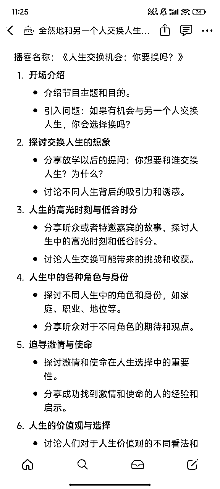
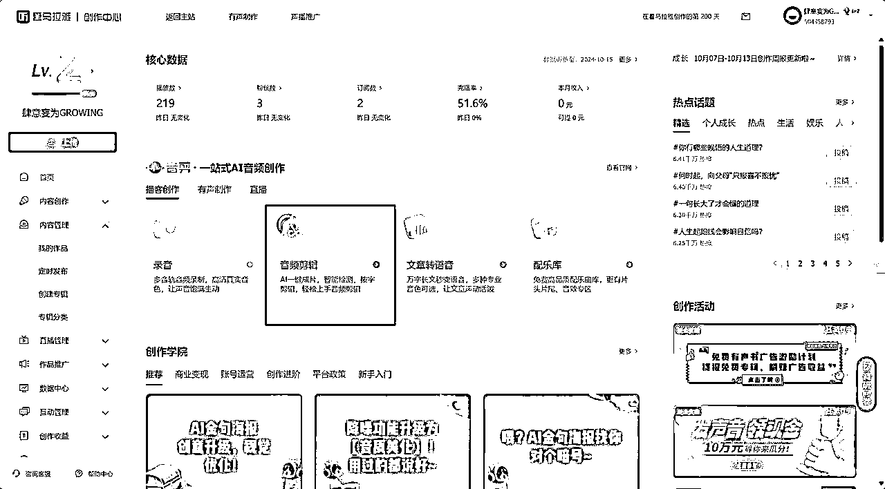

来源：https://e1hu1wy3gm.feishu.cn/docx/QJjCdhlaXoAllSxuYFjcXQ22nIb
虽然我也在爱发电平台上购买过 放学以后 主理人们制作的《创作者手册：从播客开始说起》，
但时过境迁，很多东西都不太一样了。
同时，过多的选项可能会导致新手大脑过载，
产生这样的想法：这么多东西，好麻烦，还是等会儿再说吧！
可是，只有行动是走向前方的唯一途径
不要因为麻烦就不去行动，不要因为恐惧看不到前方的坦途
我也把自己的探索经验分享出来，希望能减少大家开始的阻力！
本文将站在一期新播客诞生的视角
从选题到上线全流程作为全文脉络进行分享
一、前期准备
三、剪辑
四、上线
（当然，其实应该再加上复盘这一块，但因为只有团队复盘的经历，所以暂且搁置）
好的，那么正文开始
我把选题目前分为两大类：
主题讨论类（例如，放学以后、来都来了、自习室）
嘉宾访谈类 (例如， 搞钱学姐、岩中花述）
虽然我更喜欢前者，但是前者非常考验主播本人的输出能力；
新手入门，嘉宾访谈类 绝对会比 主题讨论类 更简单一些
因为一个优秀的嘉宾，能够分担主播极大的压力
按照雪姨前段时间分享的：访谈类节目，
嘉宾发言70% & 主播发言30% 这样是比较理想的比例
上榜前：单日播放量 为45，完播率 40% 左右
但达到这个数据量的其他节目并未上榜，遂思考应该是主题的问题
以此来看，其实首页最开头的推荐页面，可能才是流量的主要来源
我一般会做一个选题库，用于收集和整理潜在的选题来源。这一过程帮助我在不同的创作环境中，快速找到灵感。
（因为是在notion里做的，所以查看要在浏览器+可能需要魔法）
Notion 选题库 案例链接
比如说在听播客的时候：

分为两个大类：线上邀请和线下邀请
线下主要放在成功案例里面说，这里主要讨论一下线上邀请
1、嘉宾来源：
听友群、同好群、播客主播群等等
可以私信给喜欢的博主发邀请，1w左右的博主的邀请同意机会比较大
2、线上邀请内容：
嘉宾访谈通常都是围绕嘉宾的个人经历进行访谈，所以重要的是确定好你想要采访的主题（比如我的采访重点在于 毕业后三年职场经历，雪姨的主要就是搞钱经历）
（而主题讨论的话）我一般都是选题库截图一发，可以选择自己最感兴趣的主题，大家来聊
3、建议录制前，开半个小时的线上会议来讨论提纲
此处特别强调一个：听友征稿
这个环节官方很喜欢，而且大家会有上电视的感觉，强烈推荐
4、定好大纲和选题后发送邀请
（右图是友台的播客录制邀请）
海报苦手的例子啊都是别人的
不过征稿的文本还是一起写的啦哈哈哈哈哈
4.17即将更新的节目中，想来探讨一下消费观和消费习惯~也会和大家分享一些好用的省钱小妙招！
分享之前，希望来做一个有意思的征集！这也是上次深圳线下听友活动探讨过的话题~
过去一年你的消费里，请和我们分享你觉得最物有所值/最后悔不已的一笔？是一场冲动的购物，还是经过深思熟虑的投资呢？无论是哪一种，他们都对你的生活产生了怎样的影响呢？
【截止日期】2024.4.12晚22:00
【投稿方式】时长2-3分钟左右为宜，手机录音即可，录制时可将手机垫高，与嘴平齐，收音更清晰。音频请发送至 【邮箱】
【温馨提示】录制时注意避免距离手机太近容易喷麦，或背景声音嘈杂收音不清晰~
投稿可以匿名也可以留下昵称哦，请保护好个人信息，如需变声处理也可提前处理好。如非人身安全或隐私威胁等重大原因，一般在已经录制上线后无法予以撤稿，敬请理解
期待听友们分享你的花钱/省钱故事！
（这个事情的解决方案，是直接问平台工作人员）
小宇宙平台内容审核比较宽松，除了shownotes里直接放了海外链接被卡过
其他的我都没遇到过什么问题
（小颖老师虽然之前不认识，但是因为相似的医学生经历，被明白老师抓来了（x）
i人地狱的既视感，不过幸好后面大家玩的很来哈哈哈哈哈哈
在这一期选择主播时，因为主题限定在毕业后的职场经历，所以对于参与的主播，我会稍微有选择性，主要考虑以下几个因素：
在本次主题中，我的嘉宾选择并没有严格筛选，初步只是主要是基于以下原因：
当然最重要的还是嘉宾愿意接受采访嘛
录制地点选择：
当时有两个选项：1、是雪姨办公室那边，2、明白老师家里
虽然说雪姨办公室那边的录音设备肯定会更好，但是我还是选择了去明白老师的家里面，
一方面是嘉宾在自己熟悉的环境里面会更自在一点，就是他会觉得更舒服一点；
另一个方面就是其实如果你到家里面上门拜访的话，就是更容易拉近你和嘉宾的距离。
带礼物
（偷偷提供情报：明白老师最喜欢永辉超市的西芹、来家里可以带喜欢的书去，进行一个书籍交换；
孙羚老师最喜欢小黄人，送之前有的也没关系）
最重要的一点：一定备份！一定要备份！！一定要备份！！！
（重要的事情说三遍）
这里的备份有两个部分：
线下录制的时候一定要两个设备录制
线上录制的时候一定要 会议录屏+线下设备录制
比较推荐 飞书/钉钉 传输文件，不容易出现过期
原始文件也要做好分类归纳
（本地电脑储存记得放在D/E盘，不要放在C盘）
如果是用喜马拉雅线上剪辑的话，线上还可以同步再备份一次
不推荐微信，因为会文件过期
【温馨提示】录制时注意避免距离手机（一般为15-20cm）太近容易喷麦，或背景声音嘈杂收音不清晰~
可以先录制一段测试音频，确认收音后，再正式录音
新增了线下录制的经验，和好朋友线下录制是一个非常有意思的事情
虽然现在我们是可以做到保护好一份音频，然后保证自己的文件没有问题，但是新手，请务必做好备份工作
因为一个1h最高质量的音频，内存基本只用10MB左右，相比于现在的内存水平，这是非常小的！
有非常多的选择（专业比如说 Audacity），但是我目前使用并且最推荐的还是 喜马拉雅的线上剪辑
相比于 剪映 来说（因为龙悦 也就是雪姨团队的剪辑是用这个的），
喜马拉雅 没那么吃电脑配置+自动保存
音频转文字剪辑，可同时处理3轨音频，再加上独立的资源储存
我强烈推荐

这里我最喜欢用ai转文字，然后直接在文本上剪辑，粗剪非常迅速
第一次直接去好朋友家录制！下午6点录制完，用同一台电脑轮流剪辑，9点基本结束
第二天重新修改了一下，大约又耗时1h
有几点新手注意的小tips：
如果处理不好，回复原来的样子，因电流声音在耳机里面会非常刺耳
我目前比较简单，主要是小宇宙以及托管的苹果播客以及QQ音乐，
小宇宙可以直接托管 苹果播客、QQ音乐，不用自己额外同步
目前可以通过海外RSS托管实现平台同步，但我之前使用的托管平台，限制shownotes字数
（话痨崩溃）（话痨被逼疯）（话痨放弃）
所以现在的同步主要靠手动
常见平台有
国内：苹果、小宇宙、喜马拉雅、荔枝FM、网易云、QQ音乐、豆瓣、微博（是的他也开了）
国外：spotify、substack（比较推荐的平台，公众号也可以直接搬运过去）
不同的平台喜欢的内容不同，但总归是 一鱼多吃 没有坏处
偶尔会同步到海外substack（公众号 海外版）
shownotes的内容都比较固定，直接在之前的shownotes模板上修改就好
以下是一个参考：
shownotes的主要部分
【节目介绍】
【嘉宾信息】
可以放上友台的链接
【时间线】
【互动提示】
【参考资料/引用信息】
【主播/节目介绍&私域链接】
（当然，因为我并不是J人，对于这些东西的整理会比较 随意）